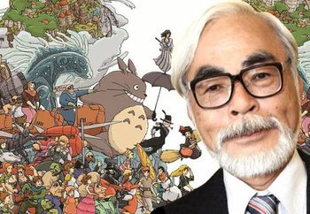
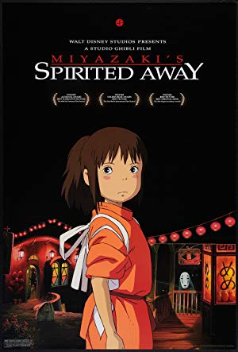
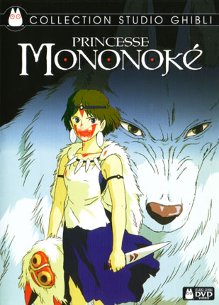

Es el títuo perfecto para una de las figuras más iconicas de la animación japonesa
Nació en Tokio, Japón el 5 de enero de 1941, es un director de cine muy renombrado internacionalmente por sus peliculas animadas. Jnto con Isao Takahata fundó Studio Ghibli, la cual ha sido comparada con Walt Disney u Orson Welles.
Uno de sus trabajos más populares se llama El viaje de Chihiro, el cual rebasó los ingresos en taquillas de Japón y superó el éxito obtenido por Titanic, y también fue la primera película de anime en ganar un Premio Óscar.
Sus películas normalmente las protagonisan niñas y mujeres jóvenes fuertes e independientes como el film La princesa Mononoke.
